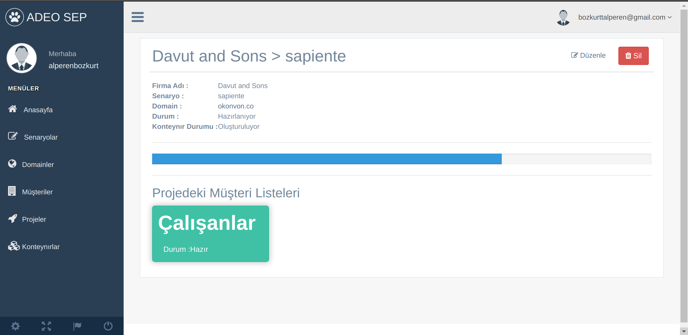

Hakkımda
| Ankara | |
| +90 507 906 1137 | |
| mail@alperenbozkurt.net | |
| https://alperenbozkurt.net | |
| Eylül 1997, Ankara | |
| İngilizce |
Bilgisayar Bilgisi
| Ruby & Ruby on Rails | |
| Html-Css | |
| JavaScript | |
| Git | |
| Docker |
Eğitim
İş/Staj Deneyimi
Back-End Developer
Canlı yayın ile ürün satan bir e-ticaret girişimi olan Vidyodan uygulamasında back-end geliştirici olarak görev alıyorum. Spree e-ticaret altyapısını kullanıyorum.
Back-End Developer
Create An API ve TfgLoyalty Projelerinin geliştirilmesinde görev aldım.
Software Team Lead
Ruby on Rails, ESX, KVM, Proxmox, Opnsense, pfsense, OpenVpn, WebSocket, Docker ve Redis kullanarak priviahub.com'un yazılması.
Projeler
PriviaHub

Privia Security adlı firmada geliştirmeye başlayıp public ve kurumsal versiyonlarını hazırlamış olduğum projedir. Bu projede başta Back-End Developer olarak, sonrasında ise Yazılım Ekip Lideri olarak görev aldım.
Bu proje, siber güvenlik öğrenmek ve pratik yapmak, siber güvenlik elemanlarını test etmek, mülakatlarda kullanılmak ve kurum içerisinde bilgi düzeyini ölçmek için hazırladığım bir sanal poligondur.
Özellikleri: Kvm, ESX, Docker gibi sistemlere bağlanarak işlemler gerçekleştirme.
Kullanıcıların sisteme davet edilerek birbirleri ile yarışması (Turnuva Sistemi).
Kullanıcıların bilgi seviyesinin detaylı bir şekilde ölçülmesi, raporlanması.
OpenVPN, Active Directory ile kullanıcıların ve ağlarının (VIP, Normal Kullanıcı) yönetimi.
PriviaHub Public Versiyon
SEP

Social Enginering Platform, sosyal mühendislik testlerini otomatize etmeyi amaçlayan bir projedir. Proje verilen websitesini klonlayarak docker konteynırı haline getirir ve hazırlanmış mailler şablonlarını sisteme entegre edilmiş kullanıcılara anlık olarak mail gönderir.
Özellikleri:
Wget ile websitesinin klonlanması ve php uygulama haline getirilmesi.
Uygulama için docker konteynırı oluşturularak sistemden kontrolünün sağlanması.
Kullanıcıların exel dosyasından parse edilerek sisteme eklenmesi.
CkEditör ile mail senaryosunun hazırlanması.
Maillerin gönderilmesi.
Detaylı Logların analizi.